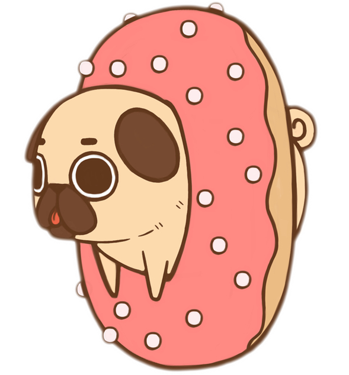
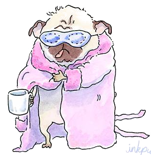

Интересный факт
Мопс, как и все «курносые» собаки, громко храпит во сне.
Выпуск №1 от 22 октября 2017 года.
Собака так преданна, что даже не веришь в то, что че ловек заслуживает такой любви.
Мопсы очень милы и дружелюбны, испытывают сильную привязанность к членам семьи, игриво встречают зашедших в гости людей у порога квартиры. Но вместе с этим, благодаря своему доброму нраву, слишком приветливо отно сятся к незнакомцам. Потому их следует обу чать не реагировать на команды посторонних людей и не брать еду из рук.
Мопс, как и все «курносые» собаки, громко храпит во сне.
Невзирая на относительно низкий уровень ак тивности, мопс никогда не откажется поиграть со своим хозяином. В особенности это каса ется молодых особей.Эта порода собак – компакт ная и солидная. И самое основное для заводчи ка – сохранение породного типа. Можно вы делить три разновидности мопсов:
К сожалению, в 90-х мопсы – шарпеи даже полу чали награды на выставках.Мопс – собака сба лансированная. Он должен быть коренастый, а не толстый или худой, и обладать крепкой развитой мускулатурой, а не страдать ожирением.
Мопс — маленькая декоративная собачка, ко торую издавна держала знать. Собака с живым, весёлым и при этом уравновешенным характе ром, благородная и привязчивая к хозяину.
Удивительная внешность и экзотический окрас мопса вряд ли оставят кого-либо равнодушным. Их безграничная доброжелательность и безумная любовь к детям позволяют этим собакам стано виться любимицами в любом обществе. Мопсы чрезвычайно игривы и общительны.
Собаки этой породы очень настойчивы. Они без тру да могут показать своему хозяину, чего же они желают, и не понять их в этом весьма сложно. При дрес сировке не следует повышать голос. Мопс может сделать вид, что он внезапно оглох, или моментально пре образиться и выглядеть так, будто его только что побили. Отличаясь умом и сообразитель ностью, эти собаки, как и хаски, выделяются особым упрямством, поэтому обучить чему-либо но вому взрослую особь бывает проблемно. Хозяи на и членов его семьи эти песики защищают само отверженно, они становятся довольно агрессивными и могут ощутимо покусать обидчика.
Специально растравлять мопса не нужно, ведь приступы ярости могут привести к удушью или сердечному приступу.
Основа их характера – это преданность и доб рота. По преданности хозяину они ни сколько не уступают другой маленькой собачке — чиху ахуа. Оставлять одну на долгое время такую со баку нельзя. Все время, проведенное без хозя ина, мопс будет страдать, демонстрируя это всем своим видом.
По мнению мопса, все должно находиться на поло женных местах. Если его что-то не устраивает, он сра зу принимает боевую стойку и заливается громким лаем. Как только «все вернется на круги своя», мопс зевнет, чихнет и удалится на свое место. Живут мопсы в среднем 13 – 15 лет. Такая собака идеально подойдет для людей, не имеющих опыта в воспи тании животных. Хотя при дрессировке следу ет проявлять настойчивость.